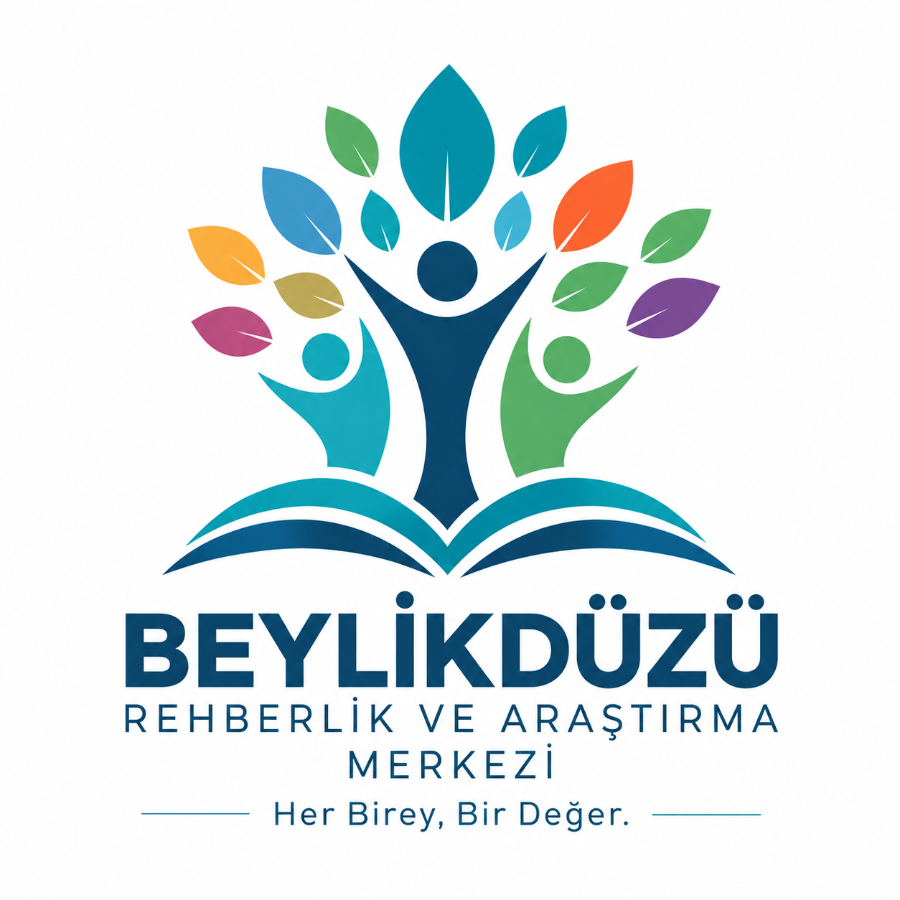

Beylikdüzü RAM Okul Risk Haritası
Beylikdüzü Rehberlik ve Araştırma Merkezi · 2026–2027
Okul Risk Haritası · Kullanıcı Girişi
İlk kullanımda e-posta adresinizle hesap oluşturun ve gelen e-postayı doğrulayın. Öğretmenler okul erişimi için RAM onayı alır. Öğrenci isimleri ve kimlik bilgileri bu uygulamaya girilmez.
Okul erişim isteği
Okulunuzu ve kademesini seçiniz. RAM, öğretmen yetkinizi doğrulayıp onayladığında formu doldurabilirsiniz.
Okul geneli formu — 36 gösterge
Aynı öğrenci birden fazla göstergede bulunabilir. Gösterge toplamları tekil öğrenci sayısı değildir. Okul geneli sayıları giriniz; boş alan bırakmayınız.
RAM yönetici ekranı
Tüm okul formlarını ve eksik girişleri görebilirsiniz. Okullar, adları ve kademeleriyle listelenir.
Gönderilen Formlar
Gönderilen okul formlarını buradan inceleyebilir ve gerektiğinde silebilirsiniz. Silme işlemi geri alınamaz ve sadece RAM yöneticileri tarafından yapılabilir.
| Okul | Eğitim yılı | Son gönderim | İşlem |
|---|
Okulların veri giriş durumu
| Okul | Kademe | Durum | İşlem |
|---|
Öğretmen erişim istekleri
Okul / İlçe raporu
Beylikdüzü Rehberlik ve Araştırma Merkezi · Her Birey, Bir Değer.